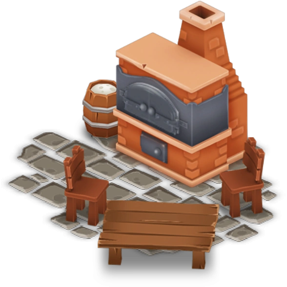

The Pie Oven is a production building unlocked at experience level 14. It costs 2,200 💰 and takes 12 hours (or 35 💎) to build the Pie Oven. It gives players 17 ⭐ when completed.
Carrot Pie
Level 14
⏱ 1 h
💰 11
⭐ 1
⭐ 1
Pumpkin Pie
Level 15
⏱ 2 h
💰 15
⭐ 2
⭐ 2
Bacon Pie
Level 18
⏱ 3 h
💰 29
⭐ 3
⭐ 3
Apple Pie
Level 28
⏱ 2 h 30 min
💰 27
⭐ 12
⭐ 12
Fish Pie
Level 28
⏱ 2 h
💰 27
⭐ 12
⭐ 12
Feta Pie
Level 34
⏱ 1 h 30 min
💰 22
⭐ 9
⭐ 9
Casserole
Level 36
⏱ 2 h
💰 57
⭐ 14
⭐ 14
Shepherd's Pie
Level 39
⏱ 1 h 40 min
💰 50
⭐ 13
⭐ 13
Asparagus Quiche
Level 47
⏱ 2 h
💰 32
⭐ 8
⭐ 8
Chocolate Pie
Level 65
⏱ 1 h 15 min
💰 70
⭐ 31
⭐ 31
Lemon Pie
Level 67
⏱ 2 h 15 min
💰 44
⭐ 19
⭐ 19
Peach Tart
Level 76
⏱ 2 h 30 min
💰 57
⭐ 25
⭐ 25
Passion Fruit Pie
Level 92
⏱ 1 h
💰 111
⭐ 49
⭐ 49
Mushroom Pot Pie
Level 97
⏱ 1 h
💰 140
⭐ 62
⭐ 62
Eggplant Parmesan
Level 99
⏱ 45 min
💰 113
⭐ 45
⭐ 45